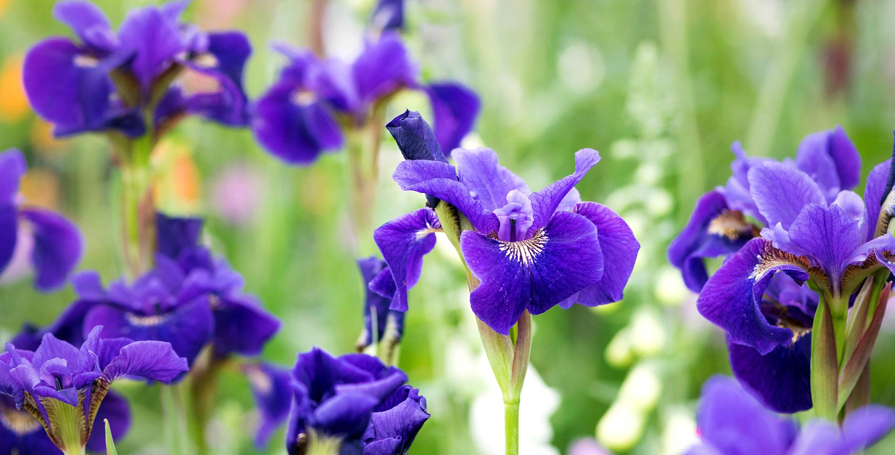
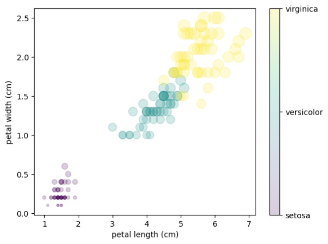

Built a supervised machine learning classifier to predict Iris flower species using sepal and petal measurements. This project focused on understanding the basic machine learning workflow from data splitting to model evaluation.
The K-Nearest Neighbors model achieved strong classification performance, demonstrating how simple measurement-based features can be used to separate Iris species effectively.
